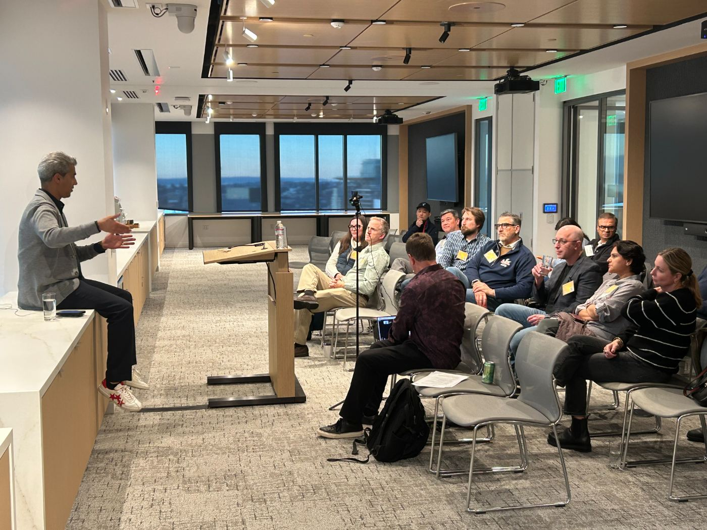

01
Work on your own priorities.
Your revenue leader can work through a sales bottleneck while your technology leader pressure-tests a roadmap tradeoff.
The Success Equation
Your company’s next move depends on more than one person. Explore how support can reach more of the decisions your leadership team makes.
Example assumptions: four leaders, 3 decisions each. Chance per decision: 80% without added support; 85% with it.
01 · Choose your team
Choose how many leaders have support. The total number of decisions stays the same.
Modeled result14.22%See comparison ↓
12 of 12 decisions covered by support
The higher assumed probability applies only to participating leaders’ decisions.
02 · See the modeled difference
Hypothetical probability that all 12 modeled decisions achieve their intended outcome
This illustration assumes independent decisions. It does not estimate company success or measure VEN’s impact.
An example team of four leaders. Compare decisions made with and without relevant support.
The chance of achieving a decision’s intended outcome. Both percentages are your assumptions, not measured VEN effects.
A product of decision probabilities
pn − k × qk
p = baseline probability
q = assumed probability with support
n = all decisions across four leaders
k = participating leaders’ decisions
For three decisions per leader, four leaders make twelve decisions. One participant applies the support assumption to three decisions; four participants apply it to all twelve. Joining does not automatically raise either input.
The outputs represent the chance that all modeled decisions meet their intended outcomes if those outcomes are independent and the stated probabilities are accurate. A company can still succeed when some decisions do not work out. Real decisions also differ in importance, influence each other and can be revisited.
The multiplier divides the support scenario’s probability by the baseline probability. It is a relative likelihood, not a statistical odds ratio. Equal assumptions give no improvement; a lower support assumption reduces the result. A zero baseline makes the ratio undefined.
Why participation across the team matters
The CEO is not the only person making consequential decisions. When colleagues join, relevant experience reaches the leaders who own revenue, product, hiring and capital decisions.

01
Your revenue leader can work through a sales bottleneck while your technology leader pressure-tests a roadmap tradeoff.
02
Each member’s VEN Partner focuses on that person’s stage, responsibilities and current priorities.
03
Leaders can use what they learn to challenge assumptions, clarify dependencies and choose practical next steps with their teams.
Independent research
8.1%higher firm revenueCai and Szeidl’s study of 2,820 young Chinese firms found that monthly manager meetings over one year increased revenue by 8.1% relative to the control group.
This is evidence from a different business setting, not a VEN result or a venture-backed benchmark. It does not establish the benefit of adding leadership-team members or validate this calculator.
Read the study · Quarterly Journal of Economics, 2018Start with the decisions your team is facing
Each eligible leader has their own trial. Talk through the fit for you and your colleagues before deciding on membership.
Apply for membership How VEN Partner support works